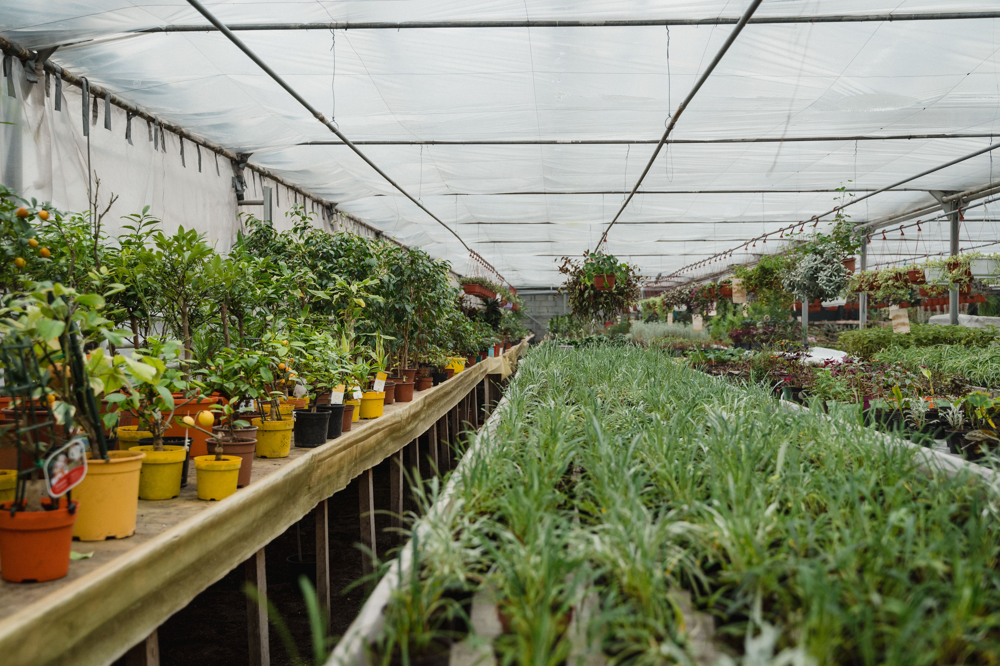

Simple Gardening Tips for Every Season

Gardening is a wonderful activity that can be enjoyed throughout the year. Every season brings different weather conditions, so plants need different types of care. Here are some simple gardening tips for every season.
1. Gardening in Spring
Spring is a good time to plant new flowers and vegetables. Prepare your soil, remove weeds, and give your plants enough water and sunlight.
2. Gardening in Summer
Summer can be very hot, so plants need extra attention. Water your plants regularly, especially during hot days. Keep sensitive plants in a shaded area.
3. Gardening in Autumn
Autumn is a good time to clean your garden. Remove dry leaves, trim plants, and prepare the soil for the colder months.
4. Gardening in Winter
During winter, some plants grow slowly. Protect sensitive plants from cold weather. Avoid giving too much water because soil takes longer to dry in cold conditions.
5. Check Your Plants Regularly
Check your plants for dry leaves, insects, and other problems. Regular care helps you notice problems early and keep plants healthy.
6. Use Good Soil and Compost
Healthy soil helps plants grow better. Add suitable compost to improve soil quality and provide important nutrients.
7. Water Plants According to Their Needs
Different plants need different amounts of water. Always check the soil before watering and avoid overwatering your plants.
Conclusion
Gardening becomes easier when you understand the needs of your plants in every season. With proper watering, sunlight, and regular care, you can keep your garden beautiful throughout the year.
Useful Gardening Resources
Read more about seasonal gardening from these gardening experts: